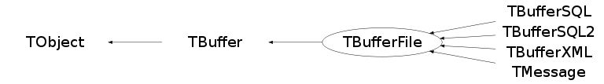
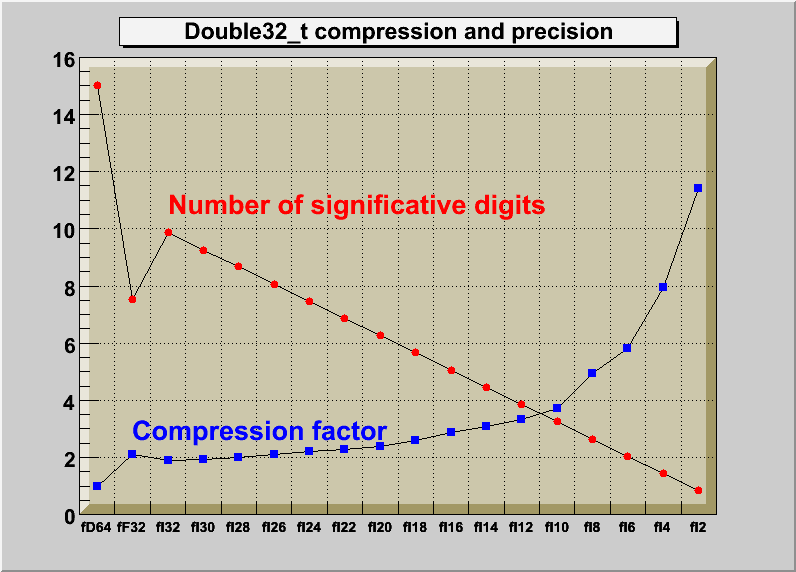

class TBufferFile: public TBuffer
TBufferFile The concrete implementation of TBuffer for writing/reading to/from a ROOT file or socket.
Function Members (Methods)
public:
| TBufferFile(TBuffer::EMode mode) | |
| TBufferFile(TBuffer::EMode mode, Int_t bufsiz) | |
| TBufferFile(TBuffer::EMode mode, Int_t bufsiz, void* buf, Bool_t adopt = kTRUE, ReAllocCharFun_t reallocfunc = 0) | |
| virtual | ~TBufferFile() |
| void | TObject::AbstractMethod(const char* method) const |
| virtual void | TObject::AppendPad(Option_t* option = "") |
| virtual Int_t | ApplySequence(const TStreamerInfoActions::TActionSequence& sequence, void* object) |
| virtual Int_t | ApplySequence(const TStreamerInfoActions::TActionSequence& sequence, void* start_collection, void* end_collection) |
| virtual Int_t | ApplySequenceVecPtr(const TStreamerInfoActions::TActionSequence& sequence, void* start_collection, void* end_collection) |
| void | TBuffer::AutoExpand(Int_t size_needed) |
| virtual void | TObject::Browse(TBrowser* b) |
| char* | TBuffer::Buffer() const |
| Int_t | TBuffer::BufferSize() const |
| virtual Int_t | CheckByteCount(UInt_t startpos, UInt_t bcnt, const TClass* clss) |
| virtual Int_t | CheckByteCount(UInt_t startpos, UInt_t bcnt, const char* classname) |
| virtual Bool_t | CheckObject(const TObject* obj) |
| virtual Bool_t | CheckObject(const void* obj, const TClass* ptrClass) |
| static TClass* | Class() |
| virtual void | ClassBegin(const TClass*, Version_t = -1) |
| virtual void | ClassEnd(const TClass*) |
| virtual void | ClassMember(const char*, const char* = 0, Int_t = -1, Int_t = -1) |
| virtual const char* | TObject::ClassName() const |
| virtual void | TObject::Clear(Option_t* = "") |
| virtual TObject* | TObject::Clone(const char* newname = "") const |
| virtual Int_t | TObject::Compare(const TObject* obj) const |
| virtual void | TObject::Copy(TObject& object) const |
| virtual void | DecrementLevel(TVirtualStreamerInfo*) |
| virtual void | TObject::Delete(Option_t* option = "")MENU |
| void | TBuffer::DetachBuffer() |
| virtual Int_t | TObject::DistancetoPrimitive(Int_t px, Int_t py) |
| virtual void | TObject::Draw(Option_t* option = "") |
| virtual void | TObject::DrawClass() constMENU |
| virtual TObject* | TObject::DrawClone(Option_t* option = "") constMENU |
| virtual void | TObject::Dump() constMENU |
| virtual void | TObject::Error(const char* method, const char* msgfmt) const |
| virtual void | TObject::Execute(const char* method, const char* params, Int_t* error = 0) |
| virtual void | TObject::Execute(TMethod* method, TObjArray* params, Int_t* error = 0) |
| virtual void | TObject::ExecuteEvent(Int_t event, Int_t px, Int_t py) |
| void | TBuffer::Expand(Int_t newsize, Bool_t copy = kTRUE) |
| virtual void | TObject::Fatal(const char* method, const char* msgfmt) const |
| virtual TObject* | TObject::FindObject(const char* name) const |
| virtual TObject* | TObject::FindObject(const TObject* obj) const |
| virtual void | ForceWriteInfo(TVirtualStreamerInfo* info, Bool_t force) |
| virtual void | ForceWriteInfoClones(TClonesArray* a) |
| virtual Int_t | GetBufferDisplacement() const |
| Int_t | TBuffer::GetBufferVersion() const |
| static TClass* | TBuffer::GetClass(const type_info& typeinfo) |
| static TClass* | TBuffer::GetClass(const char* className) |
| virtual Option_t* | TObject::GetDrawOption() const |
| static Long_t | TObject::GetDtorOnly() |
| static Int_t | GetGlobalReadParam() |
| static Int_t | GetGlobalWriteParam() |
| virtual const char* | TObject::GetIconName() const |
| virtual TVirtualStreamerInfo* | GetInfo() |
| virtual TProcessID* | GetLastProcessID(TRefTable* reftable) const |
| virtual Int_t | GetMapCount() const |
| virtual void | GetMappedObject(UInt_t tag, void*& ptr, TClass*& ClassPtr) const |
| virtual const char* | TObject::GetName() const |
| virtual char* | TObject::GetObjectInfo(Int_t px, Int_t py) const |
| static Bool_t | TObject::GetObjectStat() |
| virtual Option_t* | TObject::GetOption() const |
| TObject* | TBuffer::GetParent() const |
| virtual UShort_t | GetPidOffset() const |
| ReAllocCharFun_t | TBuffer::GetReAllocFunc() const |
| virtual const char* | TObject::GetTitle() const |
| virtual UInt_t | GetTRefExecId() |
| virtual UInt_t | TObject::GetUniqueID() const |
| virtual Int_t | GetVersionOwner() const |
| virtual Bool_t | TObject::HandleTimer(TTimer* timer) |
| virtual ULong_t | TObject::Hash() const |
| virtual void | IncrementLevel(TVirtualStreamerInfo* info) |
| virtual void | TObject::Info(const char* method, const char* msgfmt) const |
| virtual Bool_t | TObject::InheritsFrom(const char* classname) const |
| virtual Bool_t | TObject::InheritsFrom(const TClass* cl) const |
| virtual void | InitMap() |
| virtual void | TObject::Inspect() constMENU |
| void | TObject::InvertBit(UInt_t f) |
| virtual TClass* | IsA() const |
| virtual Bool_t | TObject::IsEqual(const TObject* obj) const |
| virtual Bool_t | TObject::IsFolder() const |
| Bool_t | TObject::IsOnHeap() const |
| Bool_t | TBuffer::IsReading() const |
| virtual Bool_t | TObject::IsSortable() const |
| Bool_t | TBuffer::IsWriting() const |
| Bool_t | TObject::IsZombie() const |
| Int_t | TBuffer::Length() const |
| virtual void | TObject::ls(Option_t* option = "") const |
| virtual void | MapObject(const TObject* obj, UInt_t offset = 1) |
| virtual void | MapObject(const void* obj, const TClass* cl, UInt_t offset = 1) |
| void | TObject::MayNotUse(const char* method) const |
| virtual Bool_t | TObject::Notify() |
| void | TObject::Obsolete(const char* method, const char* asOfVers, const char* removedFromVers) const |
| static void | TObject::operator delete(void* ptr) |
| static void | TObject::operator delete(void* ptr, void* vp) |
| static void | TObject::operator delete[](void* ptr) |
| static void | TObject::operator delete[](void* ptr, void* vp) |
| void* | TObject::operator new(size_t sz) |
| void* | TObject::operator new(size_t sz, void* vp) |
| void* | TObject::operator new[](size_t sz) |
| void* | TObject::operator new[](size_t sz, void* vp) |
| virtual void | TObject::Paint(Option_t* option = "") |
| virtual TVirtualArray* | TBuffer::PeekDataCache() const |
| virtual void | TObject::Pop() |
| virtual TVirtualArray* | TBuffer::PopDataCache() |
| virtual void | TObject::Print(Option_t* option = "") const |
| virtual void | TBuffer::PushDataCache(TVirtualArray*) |
| virtual Int_t | ReadArray(Bool_t*& b) |
| virtual Int_t | ReadArray(Char_t*& c) |
| virtual Int_t | ReadArray(UChar_t*& c) |
| virtual Int_t | ReadArray(Short_t*& h) |
| virtual Int_t | ReadArray(UShort_t*& h) |
| virtual Int_t | ReadArray(Int_t*& i) |
| virtual Int_t | ReadArray(UInt_t*& i) |
| virtual Int_t | ReadArray(Long_t*& l) |
| virtual Int_t | ReadArray(ULong_t*& l) |
| virtual Int_t | ReadArray(Long64_t*& l) |
| virtual Int_t | ReadArray(ULong64_t*& ll) |
| virtual Int_t | ReadArray(Float_t*& f) |
| virtual Int_t | ReadArray(Double_t*& d) |
| virtual Int_t | ReadArrayDouble32(Double_t*& d, TStreamerElement* ele = 0) |
| virtual Int_t | ReadArrayFloat16(Float_t*& f, TStreamerElement* ele = 0) |
| virtual void | ReadBool(Bool_t& b) |
| virtual Int_t | ReadBuf(void* buf, Int_t max) |
| virtual void | ReadChar(Char_t& c) |
| virtual void | ReadCharP(Char_t* c) |
| virtual TClass* | ReadClass(const TClass* cl = 0, UInt_t* objTag = 0) |
| virtual Int_t | ReadClassBuffer(const TClass* cl, void* pointer, const TClass* onfile_class) |
| virtual Int_t | ReadClassBuffer(const TClass* cl, void* pointer, Int_t version, UInt_t start, UInt_t count, const TClass* onfile_class) |
| virtual Int_t | ReadClassEmulated(const TClass* cl, void* object, const TClass* onfile_class) |
| virtual Int_t | ReadClones(TClonesArray* a, Int_t nobjects, Version_t objvers) |
| virtual void | ReadDouble(Double_t& d) |
| virtual void | ReadDouble32(Double_t* d, TStreamerElement* ele = 0) |
| virtual void | ReadFastArray(Bool_t* b, Int_t n) |
| virtual void | ReadFastArray(Char_t* c, Int_t n) |
| virtual void | ReadFastArray(UChar_t* c, Int_t n) |
| virtual void | ReadFastArray(Short_t* h, Int_t n) |
| virtual void | ReadFastArray(UShort_t* h, Int_t n) |
| virtual void | ReadFastArray(Int_t* i, Int_t n) |
| virtual void | ReadFastArray(UInt_t* i, Int_t n) |
| virtual void | ReadFastArray(Long_t* l, Int_t n) |
| virtual void | ReadFastArray(ULong_t* l, Int_t n) |
| virtual void | ReadFastArray(Long64_t* l, Int_t n) |
| virtual void | ReadFastArray(ULong64_t* ll, Int_t n) |
| virtual void | ReadFastArray(Float_t* f, Int_t n) |
| virtual void | ReadFastArray(Double_t* d, Int_t n) |
| virtual void | ReadFastArray(void* start, const TClass* cl, Int_t n = 1, TMemberStreamer* s = 0, const TClass* onFileClass = 0) |
| virtual void | ReadFastArray(void** startp, const TClass* cl, Int_t n = 1, Bool_t isPreAlloc = kFALSE, TMemberStreamer* s = 0, const TClass* onFileClass = 0) |
| virtual void | ReadFastArrayDouble32(Double_t* d, Int_t n, TStreamerElement* ele = 0) |
| virtual void | ReadFastArrayFloat16(Float_t* f, Int_t n, TStreamerElement* ele = 0) |
| virtual void | ReadFastArrayString(Char_t* c, Int_t n) |
| virtual void | ReadFloat(Float_t& f) |
| virtual void | ReadFloat16(Float_t* f, TStreamerElement* ele = 0) |
| virtual void | ReadInt(Int_t& i) |
| virtual void | ReadLong(Long_t& l) |
| virtual void | ReadLong64(Long64_t& ll) |
| virtual TObject* | ReadObject(const TClass* cl) |
| virtual void* | ReadObjectAny(const TClass* cast) |
| virtual TProcessID* | ReadProcessID(UShort_t pidf) |
| virtual void | ReadShort(Short_t& h) |
| virtual Int_t | ReadStaticArray(Bool_t* b) |
| virtual Int_t | ReadStaticArray(Char_t* c) |
| virtual Int_t | ReadStaticArray(UChar_t* c) |
| virtual Int_t | ReadStaticArray(Short_t* h) |
| virtual Int_t | ReadStaticArray(UShort_t* h) |
| virtual Int_t | ReadStaticArray(Int_t* i) |
| virtual Int_t | ReadStaticArray(UInt_t* i) |
| virtual Int_t | ReadStaticArray(Long_t* l) |
| virtual Int_t | ReadStaticArray(ULong_t* l) |
| virtual Int_t | ReadStaticArray(Long64_t* l) |
| virtual Int_t | ReadStaticArray(ULong64_t* ll) |
| virtual Int_t | ReadStaticArray(Float_t* f) |
| virtual Int_t | ReadStaticArray(Double_t* d) |
| virtual Int_t | ReadStaticArrayDouble32(Double_t* d, TStreamerElement* ele = 0) |
| virtual Int_t | ReadStaticArrayFloat16(Float_t* f, TStreamerElement* ele = 0) |
| virtual char* | ReadString(char* s, Int_t max) |
| virtual void | ReadTString(TString& s) |
| virtual void | ReadUChar(UChar_t& c) |
| virtual void | ReadUInt(UInt_t& i) |
| virtual void | ReadULong(ULong_t& ll) |
| virtual void | ReadULong64(ULong64_t& ll) |
| virtual void | ReadUShort(UShort_t& h) |
| virtual Version_t | ReadVersion(UInt_t* start = 0, UInt_t* bcnt = 0, const TClass* cl = 0) |
| virtual Version_t | ReadVersionForMemberWise(const TClass* cl = 0) |
| virtual void | ReadWithFactor(Float_t* ptr, Double_t factor, Double_t minvalue) |
| virtual void | ReadWithFactor(Double_t* ptr, Double_t factor, Double_t minvalue) |
| virtual void | ReadWithNbits(Float_t* ptr, Int_t nbits) |
| virtual void | ReadWithNbits(Double_t* ptr, Int_t nbits) |
| virtual void | TObject::RecursiveRemove(TObject* obj) |
| virtual void | Reset() |
| void | TObject::ResetBit(UInt_t f) |
| virtual void | ResetMap() |
| virtual void | TObject::SaveAs(const char* filename = "", Option_t* option = "") constMENU |
| virtual void | TObject::SavePrimitive(ostream& out, Option_t* option = "") |
| void | TObject::SetBit(UInt_t f) |
| void | TObject::SetBit(UInt_t f, Bool_t set) |
| void | TBuffer::SetBuffer(void* buf, UInt_t bufsiz = 0, Bool_t adopt = kTRUE, ReAllocCharFun_t reallocfunc = 0) |
| virtual void | SetBufferDisplacement() |
| virtual void | SetBufferDisplacement(Int_t skipped) |
| void | TBuffer::SetBufferOffset(Int_t offset = 0) |
| virtual void | SetByteCount(UInt_t cntpos, Bool_t packInVersion = kFALSE) |
| virtual void | TObject::SetDrawOption(Option_t* option = "")MENU |
| static void | TObject::SetDtorOnly(void* obj) |
| static void | SetGlobalReadParam(Int_t mapsize) |
| static void | SetGlobalWriteParam(Int_t mapsize) |
| static void | TObject::SetObjectStat(Bool_t stat) |
| void | TBuffer::SetParent(TObject* parent) |
| virtual void | SetPidOffset(UShort_t offset) |
| void | TBuffer::SetReadMode() |
| virtual void | SetReadParam(Int_t mapsize) |
| void | TBuffer::SetReAllocFunc(ReAllocCharFun_t reallocfunc = 0) |
| virtual void | SetStreamerElementNumber(Int_t) |
| virtual void | TObject::SetUniqueID(UInt_t uid) |
| void | TBuffer::SetWriteMode() |
| virtual void | SetWriteParam(Int_t mapsize) |
| virtual void | ShowMembers(TMemberInspector& insp) |
| virtual void | SkipObjectAny() |
| virtual void | SkipVersion(const TClass* cl = 0) |
| virtual void | Streamer(TBuffer& b) |
| void | StreamerNVirtual(TBuffer& b) |
| virtual void | StreamObject(TObject* obj) |
| virtual void | StreamObject(void* obj, const type_info& typeinfo, const TClass* onFileClass = 0) |
| virtual void | StreamObject(void* obj, const char* className, const TClass* onFileClass = 0) |
| virtual void | StreamObject(void* obj, const TClass* cl, const TClass* onFileClass = 0) |
| virtual void | TObject::SysError(const char* method, const char* msgfmt) const |
| virtual void | TagStreamerInfo(TVirtualStreamerInfo* info) |
| Bool_t | TObject::TestBit(UInt_t f) const |
| Int_t | TObject::TestBits(UInt_t f) const |
| virtual void | TObject::UseCurrentStyle() |
| virtual void | TObject::Warning(const char* method, const char* msgfmt) const |
| virtual void | WriteArray(const Bool_t* b, Int_t n) |
| virtual void | WriteArray(const Char_t* c, Int_t n) |
| virtual void | WriteArray(const UChar_t* c, Int_t n) |
| virtual void | WriteArray(const Short_t* h, Int_t n) |
| virtual void | WriteArray(const UShort_t* h, Int_t n) |
| virtual void | WriteArray(const Int_t* i, Int_t n) |
| virtual void | WriteArray(const UInt_t* i, Int_t n) |
| virtual void | WriteArray(const Long_t* l, Int_t n) |
| virtual void | WriteArray(const ULong_t* l, Int_t n) |
| virtual void | WriteArray(const Long64_t* l, Int_t n) |
| virtual void | WriteArray(const ULong64_t* ll, Int_t n) |
| virtual void | WriteArray(const Float_t* f, Int_t n) |
| virtual void | WriteArray(const Double_t* d, Int_t n) |
| virtual void | WriteArrayDouble32(const Double_t* d, Int_t n, TStreamerElement* ele = 0) |
| virtual void | WriteArrayFloat16(const Float_t* f, Int_t n, TStreamerElement* ele = 0) |
| virtual void | WriteBool(Bool_t b) |
| virtual void | WriteBuf(const void* buf, Int_t max) |
| virtual void | WriteChar(Char_t c) |
| virtual void | WriteCharP(const Char_t* c) |
| virtual void | WriteClass(const TClass* cl) |
| virtual Int_t | WriteClassBuffer(const TClass* cl, void* pointer) |
| virtual Int_t | WriteClones(TClonesArray* a, Int_t nobjects) |
| virtual void | WriteDouble(Double_t d) |
| virtual void | WriteDouble32(Double_t* d, TStreamerElement* ele = 0) |
| virtual void | WriteFastArray(const Bool_t* b, Int_t n) |
| virtual void | WriteFastArray(const Char_t* c, Int_t n) |
| virtual void | WriteFastArray(const UChar_t* c, Int_t n) |
| virtual void | WriteFastArray(const Short_t* h, Int_t n) |
| virtual void | WriteFastArray(const UShort_t* h, Int_t n) |
| virtual void | WriteFastArray(const Int_t* i, Int_t n) |
| virtual void | WriteFastArray(const UInt_t* i, Int_t n) |
| virtual void | WriteFastArray(const Long_t* l, Int_t n) |
| virtual void | WriteFastArray(const ULong_t* l, Int_t n) |
| virtual void | WriteFastArray(const Long64_t* l, Int_t n) |
| virtual void | WriteFastArray(const ULong64_t* ll, Int_t n) |
| virtual void | WriteFastArray(const Float_t* f, Int_t n) |
| virtual void | WriteFastArray(const Double_t* d, Int_t n) |
| virtual void | WriteFastArray(void* start, const TClass* cl, Int_t n = 1, TMemberStreamer* s = 0) |
| virtual Int_t | WriteFastArray(void** startp, const TClass* cl, Int_t n = 1, Bool_t isPreAlloc = kFALSE, TMemberStreamer* s = 0) |
| virtual void | WriteFastArrayDouble32(const Double_t* d, Int_t n, TStreamerElement* ele = 0) |
| virtual void | WriteFastArrayFloat16(const Float_t* f, Int_t n, TStreamerElement* ele = 0) |
| virtual void | WriteFastArrayString(const Char_t* c, Int_t n) |
| virtual void | WriteFloat(Float_t f) |
| virtual void | WriteFloat16(Float_t* f, TStreamerElement* ele = 0) |
| virtual void | WriteInt(Int_t i) |
| virtual void | WriteLong(Long_t l) |
| virtual void | WriteLong64(Long64_t ll) |
| virtual void | WriteObject(const TObject* obj) |
| virtual Int_t | WriteObjectAny(const void* obj, const TClass* ptrClass) |
| virtual UShort_t | WriteProcessID(TProcessID* pid) |
| virtual void | WriteShort(Short_t h) |
| virtual void | WriteString(const char* s) |
| virtual void | WriteTString(const TString& s) |
| virtual void | WriteUChar(UChar_t c) |
| virtual void | WriteUInt(UInt_t i) |
| virtual void | WriteULong(ULong_t l) |
| virtual void | WriteULong64(ULong64_t ll) |
| virtual void | WriteUShort(UShort_t h) |
| virtual UInt_t | WriteVersion(const TClass* cl, Bool_t useBcnt = kFALSE) |
| virtual UInt_t | WriteVersionMemberWise(const TClass* cl, Bool_t useBcnt = kFALSE) |
protected:
| TBufferFile() | |
| TBufferFile(const TBufferFile&) | |
| Int_t | CheckByteCount(UInt_t startpos, UInt_t bcnt, const TClass* clss, const char* classname) |
| void | CheckCount(UInt_t offset) |
| UInt_t | CheckObject(UInt_t offset, const TClass* cl, Bool_t readClass = kFALSE) |
| virtual void | TObject::DoError(int level, const char* location, const char* fmt, va_list va) const |
| void | TObject::MakeZombie() |
| void | operator=(const TBufferFile&) |
| virtual Int_t | TBuffer::Read(const char* name) |
| virtual Int_t | TBuffer::Write(const char* name, Int_t opt, Int_t bufs) |
| virtual Int_t | TBuffer::Write(const char* name, Int_t opt, Int_t bufs) const |
| virtual void | WriteObjectClass(const void* actualObjStart, const TClass* actualClass) |
Data Members
public:
| enum { | kMapSize | |
| kStreamedMemberWise | ||
| kNotDecompressed | ||
| kTextBasedStreaming | ||
| kUser1 | ||
| kUser2 | ||
| kUser3 | ||
| }; | ||
| enum TBuffer::EMode { | kRead | |
| kWrite | ||
| }; | ||
| enum TBuffer::[unnamed] { | kIsOwner | |
| kCannotHandleMemberWiseStreaming | ||
| kInitialSize | ||
| kMinimalSize | ||
| }; | ||
| enum TObject::EStatusBits { | kCanDelete | |
| kMustCleanup | ||
| kObjInCanvas | ||
| kIsReferenced | ||
| kHasUUID | ||
| kCannotPick | ||
| kNoContextMenu | ||
| kInvalidObject | ||
| }; | ||
| enum TObject::[unnamed] { | kIsOnHeap | |
| kNotDeleted | ||
| kZombie | ||
| kBitMask | ||
| kSingleKey | ||
| kOverwrite | ||
| kWriteDelete | ||
| }; |
protected:
| char* | TBuffer::fBufCur | Current position in buffer |
| char* | TBuffer::fBufMax | End of buffer |
| Int_t | TBuffer::fBufSize | Size of buffer |
| char* | TBuffer::fBuffer | Buffer used to store objects |
| vector<TVirtualArray*> | TBuffer::fCacheStack | Stack of pointers to the cache where to temporarily store the value of 'missing' data members |
| TExMap* | fClassMap | Map containing object,class pairs for reading |
| Int_t | fDisplacement | Value to be added to the map offsets |
| TStreamerInfo* | fInfo | Pointer to TStreamerInfo object writing/reading the buffer |
| vector<TStreamerInfo*> | fInfoStack | Stack of pointers to the TStreamerInfos |
| TExMap* | fMap | Map containing object,offset pairs for reading/writing |
| Int_t | fMapCount | Number of objects or classes in map |
| Int_t | fMapSize | Default size of map |
| Bool_t | TBuffer::fMode | Read or write mode |
| TObject* | TBuffer::fParent | Pointer to parent object owning this buffer |
| UShort_t | fPidOffset | Offset to be added to the pid index in this key/buffer. |
| ReAllocCharFun_t | TBuffer::fReAllocFunc | ! Realloc function to be used when extending the buffer. |
| Int_t | TBuffer::fVersion | Buffer format version |
| static Int_t | fgMapSize | Default map size for all TBuffer objects |
Class Charts
{kind=link}
{kind=link}
{kind=link}
{kind=link}

Function documentation
TBufferFile(TBuffer::EMode mode)
TBufferFile(TBuffer::EMode mode, Int_t bufsiz)
TBufferFile(TBuffer::EMode mode, Int_t bufsiz, void* buf, Bool_t adopt = kTRUE, ReAllocCharFun_t reallocfunc = 0)
Create an I/O buffer object. Mode should be either TBuffer::kRead or TBuffer::kWrite. By default the I/O buffer has a size of TBuffer::kInitialSize (1024) bytes. An external buffer can be passed to TBuffer via the buf argument. By default this buffer will be adopted unless adopt is false. If the new buffer is _not_ adopted and no memory allocation routine is provided, a Fatal error will be issued if the Buffer attempts to expand.
void TagStreamerInfo(TVirtualStreamerInfo* info)
Mark the classindex of the current file as using this TStreamerInfo
void SetByteCount(UInt_t cntpos, Bool_t packInVersion = kFALSE)
Set byte count at position cntpos in the buffer. Generate warning if count larger than kMaxMapCount. The count is excluded its own size.
Int_t CheckByteCount(UInt_t startpos, UInt_t bcnt, const TClass* clss, const char* classname)
Check byte count with current buffer position. They should match. If not print warning and position buffer in correct place determined by the byte count. Startpos is position of first byte where the byte count is written in buffer. Returns 0 if everything is ok, otherwise the bytecount offset (< 0 when read too little, >0 when read too much).
Int_t CheckByteCount(UInt_t startpos, UInt_t bcnt, const TClass* clss)
Check byte count with current buffer position. They should match. If not print warning and position buffer in correct place determined by the byte count. Startpos is position of first byte where the byte count is written in buffer. Returns 0 if everything is ok, otherwise the bytecount offset (< 0 when read too little, >0 when read too much).
Int_t CheckByteCount(UInt_t startpos, UInt_t bcnt, const char* classname)
Check byte count with current buffer position. They should match. If not print warning and position buffer in correct place determined by the byte count. Startpos is position of first byte where the byte count is written in buffer. Returns 0 if everything is ok, otherwise the bytecount offset (< 0 when read too little, >0 when read too much).
void ReadFloat16(Float_t* f, TStreamerElement* ele = 0)
Read a Float16_t from the buffer, see comments about Float16_t encoding at TBufferFile::WriteFloat16().
void ReadDouble32(Double_t* d, TStreamerElement* ele = 0)
Read a Double32_t from the buffer, see comments about Double32_t encoding at TBufferFile::WriteDouble32().
void ReadWithFactor(Float_t* ptr, Double_t factor, Double_t minvalue)
Read a Double32_t from the buffer when the factor and minimun value have been specified see comments about Double32_t encoding at TBufferFile::WriteDouble32().
void ReadWithNbits(Float_t* ptr, Int_t nbits)
Read a Float16_t from the buffer when the number of bits is specified (explicitly or not) see comments about Float16_t encoding at TBufferFile::WriteFloat16().
void ReadWithFactor(Double_t* ptr, Double_t factor, Double_t minvalue)
Read a Double32_t from the buffer when the factor and minimun value have been specified see comments about Double32_t encoding at TBufferFile::WriteDouble32().
void ReadWithNbits(Double_t* ptr, Int_t nbits)
Read a Double32_t from the buffer when the number of bits is specified (explicitly or not) see comments about Double32_t encoding at TBufferFile::WriteDouble32().
void WriteFloat16(Float_t* f, TStreamerElement* ele = 0)
write a Float16_t to the buffer. The following cases are supported for streaming a Float16_t type depending on the range declaration in the comment field of the data member: A- Float16_t fNormal; B- Float16_t fTemperature; //[0,100] C- Float16_t fCharge; //[-1,1,2] D- Float16_t fVertex[3]; //[-30,30,10] E- Float16_t fChi2; //[0,0,6] F- Int_t fNsp; Float16_t* fPointValue; //[fNsp][0,3] In case A fNormal is converted from a Float_t to a Float_t with mantissa truncated to 12 bits In case B fTemperature is converted to a 32 bit unsigned integer In case C fCharge is converted to a 2 bits unsigned integer In case D the array elements of fVertex are converted to an unsigned 10 bits integer In case E fChi2 is converted to a Float_t with truncated precision at 6 bits In case F the fNsp elements of array fPointvalue are converted to an unsigned 32 bit integer Note that the range specifier must follow the dimension specifier. the case B has more precision (9 to 10 significative digits than case A (6 to 7 digits). The range specifier has the general format: [xmin,xmax] or [xmin,xmax,nbits] [0,1] [-10,100]; [-pi,pi], [-pi/2,pi/4],[-2pi,2*pi] [-10,100,16] [0,0,8] if nbits is not specified, or nbits <2 or nbits>16 it is set to 16 if (xmin==0 and xmax==0 and nbits <=14) the float word will have its mantissa truncated to nbits significative bits. IMPORTANT NOTE --NOTE 1 Lets assume an original variable float x: When using the format [0,0,8] (ie range not specified) you get the best relative precision when storing and reading back the truncated x, say xt. The variance of (x-xt)/x will be better than when specifying a range for the same number of bits. However the precision relative to the range (x-xt)/(xmax-xmin) will be worst, and vice-versa. The format [0,0,8] is also interesting when the range of x is infinite or unknown. --NOTE 2 It is important to understand the difference with the meaning of nbits -in case of [-1,1,nbits], nbits is the total number of bits used to make the conversion from a float to an integer -in case of [0,0,nbits], nbits is the number of bits used for the mantissa see example of use of the Float16_t data type in tutorial double32.C/*  */
void WriteDouble32(Double_t* d, TStreamerElement* ele = 0)
write a Double32_t to the buffer. The following cases are supported for streaming a Double32_t type depending on the range declaration in the comment field of the data member: A- Double32_t fNormal; B- Double32_t fTemperature; //[0,100] C- Double32_t fCharge; //[-1,1,2] D- Double32_t fVertex[3]; //[-30,30,10] E- Double32_t fChi2; //[0,0,6] F- Int_t fNsp; Double32_t* fPointValue; //[fNsp][0,3] In case A fNormal is converted from a Double_t to a Float_t In case B fTemperature is converted to a 32 bit unsigned integer In case C fCharge is converted to a 2 bits unsigned integer In case D the array elements of fVertex are converted to an unsigned 10 bits integer In case E fChi2 is converted to a Float_t with mantissa truncated precision at 6 bits In case F the fNsp elements of array fPointvalue are converted to an unsigned 32 bit integer Note that the range specifier must follow the dimension specifier. the case B has more precision (9 to 10 significative digits than case A (6 to 7 digits). The range specifier has the general format: [xmin,xmax] or [xmin,xmax,nbits] [0,1] [-10,100]; [-pi,pi], [-pi/2,pi/4],[-2pi,2*pi] [-10,100,16] [0,0,8] if nbits is not specified, or nbits <2 or nbits>32 it is set to 32 if (xmin==0 and xmax==0 and nbits <=14) the double word will be converted to a float and its mantissa truncated to nbits significative bits. IMPORTANT NOTEs --NOTE 1 Lets assume an original variable double x: When using the format [0,0,8] (ie range not specified) you get the best relative precision when storing and reading back the truncated x, say xt. The variance of (x-xt)/x will be better than when specifying a range for the same number of bits. However the precision relative to the range (x-xt)/(xmax-xmin) will be worst, and vice-versa. The format [0,0,8] is also interesting when the range of x is infinite or unknown. --NOTE 2 It is important to understand the difference with the meaning of nbits -in case of [-1,1,nbits], nbits is the total number of bits used to make the conversion from a double to an integer -in case of [0,0,nbits], nbits is the number of bits used for the mantissa see example of use of the Double32_t data type in tutorial double32.C/* */
Int_t ReadArray(Bool_t*& b)
Read array of bools from the I/O buffer. Returns the number of bools read. If argument is a 0 pointer then space will be allocated for the array.
Int_t ReadArray(Char_t*& c)
Read array of characters from the I/O buffer. Returns the number of characters read. If argument is a 0 pointer then space will be allocated for the array.
Int_t ReadArray(Short_t*& h)
Read array of shorts from the I/O buffer. Returns the number of shorts read. If argument is a 0 pointer then space will be allocated for the array.
Int_t ReadArray(Int_t*& i)
Read array of ints from the I/O buffer. Returns the number of ints read. If argument is a 0 pointer then space will be allocated for the array.
Int_t ReadArray(Long_t*& l)
Read array of longs from the I/O buffer. Returns the number of longs read. If argument is a 0 pointer then space will be allocated for the array.
Int_t ReadArray(Float_t*& f)
Read array of floats from the I/O buffer. Returns the number of floats read. If argument is a 0 pointer then space will be allocated for the array.
Int_t ReadArray(Double_t*& d)
Read array of doubles from the I/O buffer. Returns the number of doubles read. If argument is a 0 pointer then space will be allocated for the array.
Int_t ReadArrayFloat16(Float_t*& f, TStreamerElement* ele = 0)
Read array of floats (written as truncated float) from the I/O buffer. Returns the number of floats read. If argument is a 0 pointer then space will be allocated for the array. see comments about Float16_t encoding at TBufferFile::WriteFloat16
Int_t ReadArrayDouble32(Double_t*& d, TStreamerElement* ele = 0)
Read array of doubles (written as float) from the I/O buffer. Returns the number of doubles read. If argument is a 0 pointer then space will be allocated for the array. see comments about Double32_t encoding at TBufferFile::WriteDouble32
Int_t ReadStaticArray(Bool_t* b)
Read array of bools from the I/O buffer. Returns the number of bools read.
Int_t ReadStaticArray(Char_t* c)
Read array of characters from the I/O buffer. Returns the number of characters read.
Int_t ReadStaticArray(Short_t* h)
Read array of shorts from the I/O buffer. Returns the number of shorts read.
Int_t ReadStaticArray(Int_t* i)
Read array of ints from the I/O buffer. Returns the number of ints read.
Int_t ReadStaticArray(Long_t* l)
Read array of longs from the I/O buffer. Returns the number of longs read.
Int_t ReadStaticArray(Float_t* f)
Read array of floats from the I/O buffer. Returns the number of floats read.
Int_t ReadStaticArray(Double_t* d)
Read array of doubles from the I/O buffer. Returns the number of doubles read.
Int_t ReadStaticArrayFloat16(Float_t* f, TStreamerElement* ele = 0)
Read array of floats (written as truncated float) from the I/O buffer. Returns the number of floats read. see comments about Float16_t encoding at TBufferFile::WriteFloat16
Int_t ReadStaticArrayDouble32(Double_t* d, TStreamerElement* ele = 0)
Read array of doubles (written as float) from the I/O buffer. Returns the number of doubles read. see comments about Double32_t encoding at TBufferFile::WriteDouble32
void ReadFastArrayFloat16(Float_t* f, Int_t n, TStreamerElement* ele = 0)
Read array of n floats (written as truncated float) from the I/O buffer. see comments about Float16_t encoding at TBufferFile::WriteFloat16
void ReadFastArrayDouble32(Double_t* d, Int_t n, TStreamerElement* ele = 0)
Read array of n doubles (written as float) from the I/O buffer. see comments about Double32_t encoding at TBufferFile::WriteDouble32
void ReadFastArray(void* start, const TClass* cl, Int_t n = 1, TMemberStreamer* s = 0, const TClass* onFileClass = 0)
Read an array of 'n' objects from the I/O buffer. Stores the objects read starting at the address 'start'. The objects in the array are assume to be of class 'cl'.
void ReadFastArray(void** startp, const TClass* cl, Int_t n = 1, Bool_t isPreAlloc = kFALSE, TMemberStreamer* s = 0, const TClass* onFileClass = 0)
Read an array of 'n' objects from the I/O buffer. The objects read are stored starting at the address '*start' The objects in the array are assumed to be of class 'cl' or a derived class. 'mode' indicates whether the data member is marked with '->'
void WriteArray(const ULong_t* l, Int_t n)
void WriteArrayFloat16(const Float_t* f, Int_t n, TStreamerElement* ele = 0)
Write array of n floats (as truncated float) into the I/O buffer. see comments about Float16_t encoding at TBufferFile::WriteFloat16
void WriteArrayDouble32(const Double_t* d, Int_t n, TStreamerElement* ele = 0)
Write array of n doubles (as float) into the I/O buffer. see comments about Double32_t encoding at TBufferFile::WriteDouble32
void WriteFastArrayString(const Char_t* c, Int_t n)
Write array of n characters into the I/O buffer.
void WriteFastArray(const ULong_t* l, Int_t n)
void WriteFastArrayFloat16(const Float_t* f, Int_t n, TStreamerElement* ele = 0)
Write array of n floats (as truncated float) into the I/O buffer. see comments about Float16_t encoding at TBufferFile::WriteFloat16
void WriteFastArrayDouble32(const Double_t* d, Int_t n, TStreamerElement* ele = 0)
Write array of n doubles (as float) into the I/O buffer. see comments about Double32_t encoding at TBufferFile::WriteDouble32
void WriteFastArray(void* start, const TClass* cl, Int_t n = 1, TMemberStreamer* s = 0)
Write an array of object starting at the address 'start' and of length 'n' the objects in the array are assumed to be of class 'cl'
Int_t WriteFastArray(void** startp, const TClass* cl, Int_t n = 1, Bool_t isPreAlloc = kFALSE, TMemberStreamer* s = 0)
Write an array of object starting at the address '*start' and of length 'n' the objects in the array are of class 'cl' 'isPreAlloc' indicates whether the data member is marked with '->' Return: 0: success 2: truncated success (i.e actual class is missing. Only ptrClass saved.)
TObject * ReadObject(const TClass* cl)
Read object from I/O buffer. clReq is NOT used. The value returned is the address of the actual start in memory of the object. Note that if the actual class of the object does not inherit first from TObject, the type of the pointer is NOT 'TObject*'. [More accurately, the class needs to start with the TObject part, for the pointer to be a real TObject*]. We recommend using ReadObjectAny instead of ReadObject
void * ReadObjectAny(const TClass* cast)
Read object from I/O buffer. A typical use for this function is: MyClass *ptr = (MyClass*)b.ReadObjectAny(MyClass::Class()); I.e. clCast should point to a TClass object describing the class pointed to by your pointer. In case of multiple inheritance, the return value might not be the real beginning of the object in memory. You will need to use a dynamic_cast later if you need to retrieve it.
void WriteObjectClass(const void* actualObjStart, const TClass* actualClass)
Write object to I/O buffer. This function assumes that the value of 'actualObjectStart' is the actual start of the object of class 'actualClass'
Int_t WriteObjectAny(const void* obj, const TClass* ptrClass)
Write object to I/O buffer. This function assumes that the value in 'obj' is the value stored in a pointer to a "ptrClass". The actual type of the object pointed to can be any class derived from "ptrClass". Return: 0: failure 1: success 2: truncated success (i.e actual class is missing. Only ptrClass saved.)
TClass * ReadClass(const TClass* cl = 0, UInt_t* objTag = 0)
Read class definition from I/O buffer. clReq can be used to cross check if the actually read object is of the requested class. objTag is set in case the object is a reference to an already read object.
Version_t ReadVersion(UInt_t* start = 0, UInt_t* bcnt = 0, const TClass* cl = 0)
Read class version from I/O buffer.
Version_t ReadVersionForMemberWise(const TClass* cl = 0)
Read class version from I/O buffer ; to be used when streaming out memberwise streamed collection where we do not care (not save) about the byte count and can safely ignore missing streamerInfo (since they usually indicate empty collections).
UInt_t WriteVersionMemberWise(const TClass* cl, Bool_t useBcnt = kFALSE)
Write class version to I/O buffer after setting the kStreamedMemberWise bit in the version number.
void StreamObject(void* obj, const type_info& typeinfo, const TClass* onFileClass = 0)
Stream an object given its C++ typeinfo information.
void StreamObject(void* obj, const char* className, const TClass* onFileClass = 0)
Stream an object given the name of its actual class.
void StreamObject(void* obj, const TClass* cl, const TClass* onFileClass = 0)
Stream an object given a pointer to its actual class.
UInt_t CheckObject(UInt_t offset, const TClass* cl, Bool_t readClass = kFALSE)
Check for object in the read map. If the object is 0 it still has to be read. Try to read it from the buffer starting at location offset. If the object is -1 then it really does not exist and we return 0. If the object exists just return the offset.
Bool_t CheckObject(const TObject* obj)
Bool_t CheckObject(const void* obj, const TClass* ptrClass)
void SetPidOffset(UShort_t offset)
This offset is used when a key (or basket) is transfered from one file to the other. In this case the TRef and TObject might have stored a pid index (to retrieve TProcessIDs) which refered to their order on the original file, the fPidOffset is to be added to those values to correctly find the TProcessID. This fPidOffset needs to be increment if the key/basket is copied and need to be zero for new key/basket.
void GetMappedObject(UInt_t tag, void*& ptr, TClass*& ClassPtr) const
Retrieve the object stored in the buffer's object map at 'tag' Set ptr and ClassPtr respectively to the address of the object and a pointer to its TClass.
void MapObject(const TObject* obj, UInt_t offset = 1)
Add object to the fMap container. If obj is not 0 add object to the map (in read mode also add 0 objects to the map). This method may only be called outside this class just before calling obj->Streamer() to prevent self reference of obj, in case obj contains (via via) a pointer to itself. In that case offset must be 1 (default value for offset).
void MapObject(const void* obj, const TClass* cl, UInt_t offset = 1)
Add object to the fMap container. If obj is not 0 add object to the map (in read mode also add 0 objects to the map). This method may only be called outside this class just before calling obj->Streamer() to prevent self reference of obj, in case obj contains (via via) a pointer to itself. In that case offset must be 1 (default value for offset).
void SetReadParam(Int_t mapsize)
Set the initial size of the map used to store object and class references during reading. The default size is kMapSize=503. Increasing the default has the benefit that when reading many small objects the map does not need to be resized too often (the system is always dynamic, even with the default everything will work, only the initial resizing will cost some time). This method can only be called directly after the creation of the TBuffer, before any reading is done. Globally this option can be changed using SetGlobalReadParam().
void SetWriteParam(Int_t mapsize)
Set the initial size of the hashtable used to store object and class references during writing. The default size is kMapSize=503. Increasing the default has the benefit that when writing many small objects the hashtable does not get too many collisions (the system is always dynamic, even with the default everything will work, only a large number of collisions will cost performance). For optimal performance hashsize should always be a prime. This method can only be called directly after the creation of the TBuffer, before any writing is done. Globally this option can be changed using SetGlobalWriteParam().
Int_t ReadBuf(void* buf, Int_t max)
Read max bytes from the I/O buffer into buf. The function returns the actual number of bytes read.
char * ReadString(char* s, Int_t max)
Read string from I/O buffer. String is read till 0 character is found or till max-1 characters are read (i.e. string s has max bytes allocated). If max = -1 no check on number of character is made, reading continues till 0 character is found.
void WriteString(const char* s)
Write string to I/O buffer. Writes string upto and including the terminating 0.
TProcessID * ReadProcessID(UShort_t pidf)
The TProcessID with number pidf is read from file. If the object is not already entered in the gROOT list, it is added.
UInt_t GetTRefExecId()
Return the exec id stored in the current TStreamerInfo element. The execid has been saved in the unique id of the TStreamerElement being read by TStreamerElement::Streamer. The current element (fgElement) is set as a static global by TStreamerInfo::ReadBuffer (Clones) when reading this TRef.
UShort_t WriteProcessID(TProcessID* pid)
Check if the ProcessID pid is already in the file. If not, add it and return the index number in the local file list.
void ForceWriteInfo(TVirtualStreamerInfo* info, Bool_t force)
force writing the TStreamerInfo to the file
void ForceWriteInfoClones(TClonesArray* a)
Make sure TStreamerInfo is not optimized, otherwise it will not be possible to support schema evolution in read mode. In case the StreamerInfo has already been computed and optimized, one must disable the option BypassStreamer.
Int_t ReadClones(TClonesArray* a, Int_t nobjects, Version_t objvers)
Interface to TStreamerInfo::ReadBufferClones.
Int_t ReadClassEmulated(const TClass* cl, void* object, const TClass* onfile_class)
Read emulated class.
Int_t ReadClassBuffer(const TClass* cl, void* pointer, Int_t version, UInt_t start, UInt_t count, const TClass* onfile_class)
Deserialize information from a buffer into an object. Note: This function is called by the xxx::Streamer() functions in rootcint-generated dictionaries. // This function assumes that the class version and the byte count information have been read. version is the version number of the class start is the starting position in the buffer b count is the number of bytes for this object in the buffer
Int_t ReadClassBuffer(const TClass* cl, void* pointer, const TClass* onfile_class)
Deserialize information from a buffer into an object. Note: This function is called by the xxx::Streamer() functions in rootcint-generated dictionaries.
Int_t WriteClassBuffer(const TClass* cl, void* pointer)
Function called by the Streamer functions to serialize object at p to buffer b. The optional argument info may be specified to give an alternative StreamerInfo instead of using the default StreamerInfo automatically built from the class definition. For more information, see class TStreamerInfo.
Int_t ApplySequence(const TStreamerInfoActions::TActionSequence& sequence, void* object)
Read one collection of objects from the buffer using the StreamerInfoLoopAction. The collection needs to be a split TClonesArray or a split vector of pointers.
Int_t ApplySequenceVecPtr(const TStreamerInfoActions::TActionSequence& sequence, void* start_collection, void* end_collection)
Read one collection of objects from the buffer using the StreamerInfoLoopAction. The collection needs to be a split TClonesArray or a split vector of pointers.
Int_t ApplySequence(const TStreamerInfoActions::TActionSequence& sequence, void* start_collection, void* end_collection)
Read one collection of objects from the buffer using the StreamerInfoLoopAction.
void SetGlobalReadParam(Int_t mapsize)
Set the initial size of the map used to store object and class references during reading. The default size is kMapSize=503. Increasing the default has the benefit that when reading many small objects the array does not need to be resized too often (the system is always dynamic, even with the default everything will work, only the initial resizing will cost some time). Per TBuffer object this option can be changed using SetReadParam().
void SetGlobalWriteParam(Int_t mapsize)
Set the initial size of the hashtable used to store object and class references during writing. The default size is kMapSize=503. Increasing the default has the benefit that when writing many small objects the hashtable does not get too many collisions (the system is always dynamic, even with the default everything will work, only a large number of collisions will cost performance). For optimal performance hashsize should always be a prime. Per TBuffer object this option can be changed using SetWriteParam().
void WriteFastArray(const UChar_t* c, Int_t n)
{ TBufferFile::WriteFastArray((const Char_t *)c, n); }void WriteFastArray(const UShort_t* h, Int_t n)
{ TBufferFile::WriteFastArray((const Short_t *)h, n); }void WriteFastArray(const ULong64_t* ll, Int_t n)
{ TBufferFile::WriteFastArray((const Long64_t *)ll, n); }void operator=(const TBufferFile& )